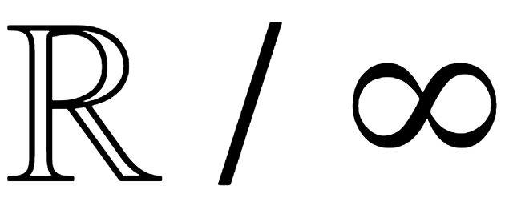

Infinito Parra
Poeta infinito en un mundo finito
Jose María Parra López es el autor de Ciento once sonetos, En la crisálida de luz y viento y la breve novela Las alas del Universo. En ambas, el autor intenta desarraigarse de los dogmas para liberar el alma a través de la eternidad y de lo infinito, considerándolos contenidos en el instante. En sus versos y en su prosa, el pensamiento se confunde con el alma, capaz de cargar la inmensidad del Cosmos a través de las propias ideas, con tal fuerza, que nos hace pensar en que el Universo es sin que necesariamente el tiempo transcurra, delimitado y definido así simplemente por su existencia.